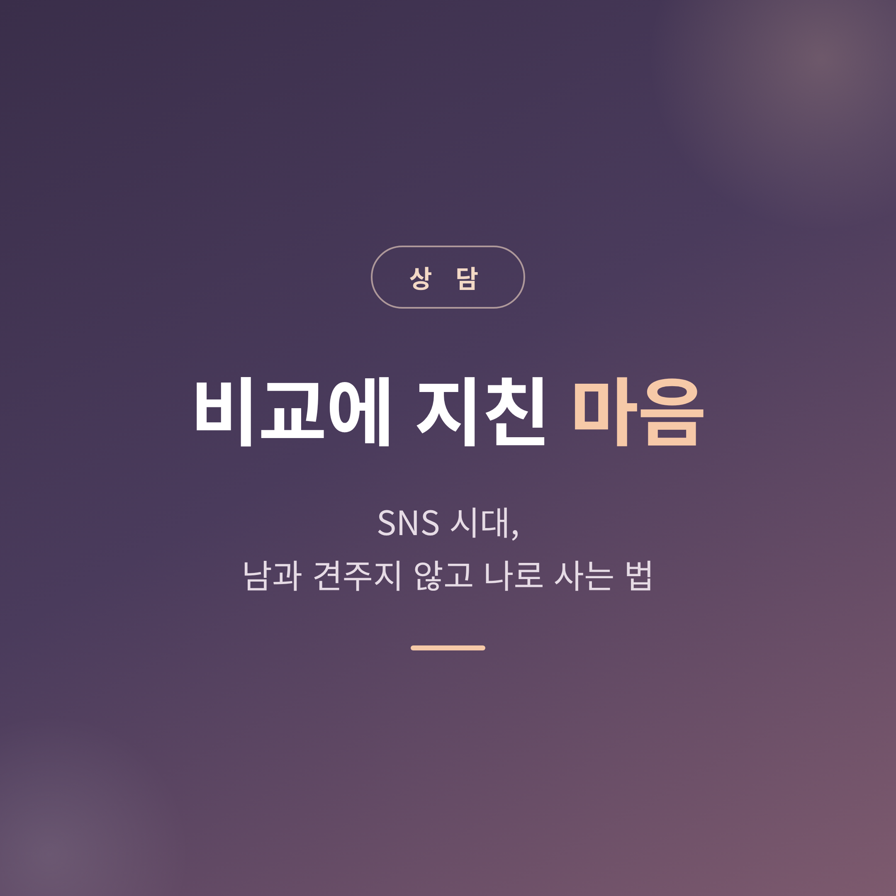
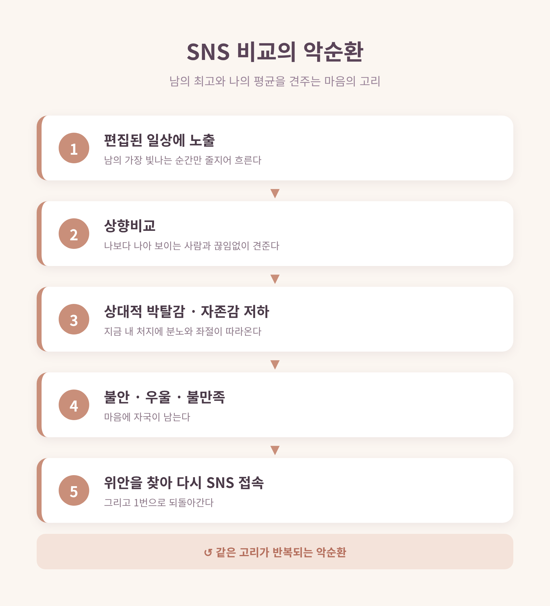
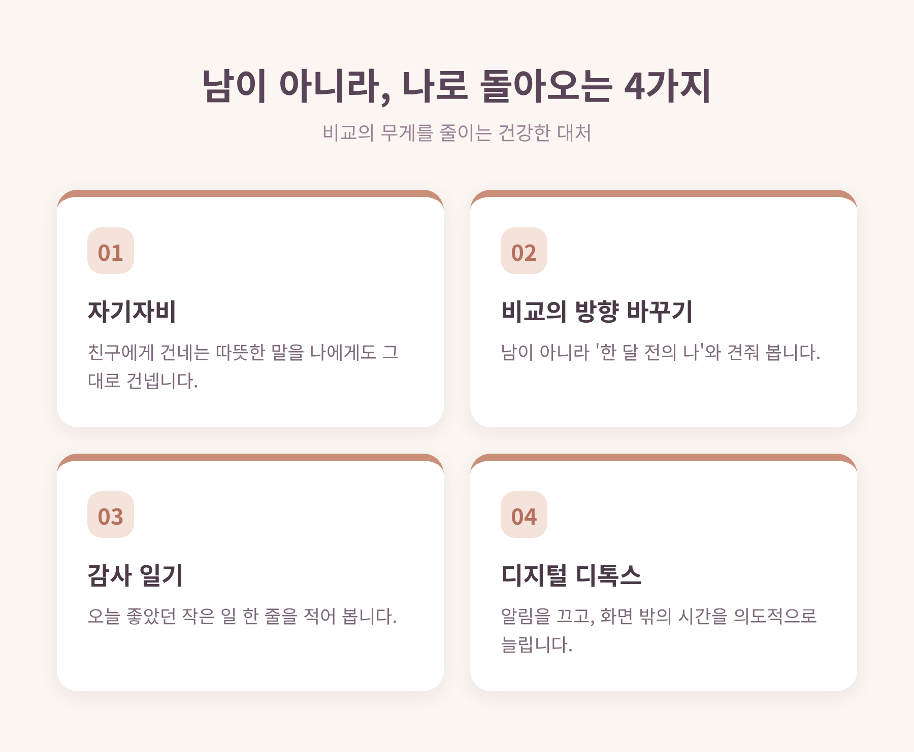

이번 글에서는 SNS 시대의 비교 심리를 정리해 보겠습니다.
남과 비교하느라 마음이 지친 분이라면, 세 가지만 먼저 기억하시면 됩니다. 첫째, 비교는 잘못이 아니라 본능입니다. 둘째, SNS는 남의 평균이 아니라 최고의 순간만 모아 보여줍니다. 셋째, 비교의 방향을 ‘남’에서 ‘어제의 나’로 돌리면 마음은 다시 단단해집니다.

먼저 한 가지를 분명히 해두고 싶습니다.
비교하는 마음은 결함이 아닙니다.
심리학의 사회비교이론은, 사람이 자신을 이해하기 위해 본능적으로 타인과 견준다고 설명합니다. 비교는 자기 이해와 동기 부여, 감정 조절에 쓰이는 자연스러운 기능인 셈입니다.
문제는 비교 자체가 아니라 그 방향과 빈도입니다.
나보다 나은 사람을 보는 상향비교는 때로 나를 자라게 합니다. 하지만 지나치면 상대적 박탈감과 자존감 저하로 이어집니다. 그러니 자신을 탓할 필요는 없습니다. 지친 것은 마음이 약해서가 아니라, 비교의 양이 너무 많았기 때문입니다.
SNS가 비교를 유독 부추기는 데는 이유가 있습니다.
화면에 흐르는 것은 타인의 평범한 하루가 아닙니다. 잘 나온 휴가 사진, 승진 소식, 완벽해 보이는 식탁. 편집되고 선별된 ‘최고의 순간’들입니다.
그런데 우리는 그것을 나의 평범한 일상과 나란히 놓습니다.
남의 가장 빛나는 장면과 나의 가장 흔한 하루를 견주는 셈입니다. 애초에 공정하지 않은 비교입니다.
한 연구는 사람들이 SNS에서 단순히 남의 물건이나 외모보다, ‘열심히 살아가고 무언가를 이뤄내는 모습’을 보며 더 깊이 위축된다고 보고합니다. 그래서 더 아픈 것입니다.

상향비교가 쌓이면 마음에는 자국이 남습니다.
여러 연구가 같은 방향을 가리킵니다. SNS를 많이 쓰는 사람일수록 상향비교를 자주 하고, 그것이 상대적 박탈감으로 이어진다는 것입니다. 지금 내 처지에 대한 분노와 좌절이 함께 따라옵니다.
우울감과의 관련도 보고됩니다. 한 조사에서는 SNS 사용 시간이 가장 많은 집단이 가장 적은 집단보다 우울증 발병 위험이 1.7배에서 2.7배까지 높았습니다.
특히 자존감이 타인의 인정에 매여 있을수록 그 영향은 커집니다.
예전엔 옆집 친구 한둘과 견주면 그만이었습니다. 지금은 손안의 화면이 수백 명의 가장 좋은 순간을 끊임없이 들이밉니다. 마음이 지치는 것은 어쩌면 당연한 일입니다.
그렇다면 어떻게 해야 할까요. 화면을 완전히 꺼버릴 수는 없으니, 비교의 무게를 줄이는 쪽이 현실적입니다.

첫째, 자신에게 친절해지는 일입니다.
심리학자 크리스틴 네프의 연구는, 자기자비가 높은 사람일수록 더 안정적인 회복탄력성과 삶의 만족을 누린다고 말합니다. 친구가 힘들어할 때 건네는 말을, 자신에게도 그대로 건네 보시면 좋겠습니다.
둘째, 비교의 방향을 바꾸는 일입니다.
견줄 대상을 남이 아니라 ‘한 달 전의 나’로 옮겨 봅니다. 자존감은 결국 타인이 아니라 자기 자신과의 관계에서 자라납니다.
셋째, 감사를 적어보는 일입니다.
긍정심리학 연구들은 짧은 감사 일기가 우울감을 낮추고 삶의 만족을 높인다고 보고합니다. 거창하지 않아도 됩니다. 오늘 좋았던 작은 일 한 줄이면 충분합니다.
넷째, 화면에서 잠시 떨어지는 일입니다.
이른바 디지털 디톡스입니다. 알림을 끄고, 식사와 잠들기 전에는 기기를 멀리하고, 화면 밖의 시간을 의도적으로 늘려봅니다. 가까운 사람과의 식사, 짧은 산책이면 충분합니다.
다만 솔직히 말씀드리면, 이 방법들이 비교의 마음을 단번에 없애 주지는 않습니다. 마음의 습관은 천천히 바뀝니다. 하나라도 작게 시작하시는 편이 낫습니다.
이 글은 일반적인 심리와 인간관계에 관한 이야기입니다.
끝으로 한 마디만 더 드리겠습니다.
남의 잣대 위에 나를 올려놓는 한, 나는 늘 누군가의 그림자일 뿐입니다.
오늘 밤 화면을 잠시 내려놓고, 어제보다 한 뼘 자란 자신을 먼저 안아 주시면 어떨까요.